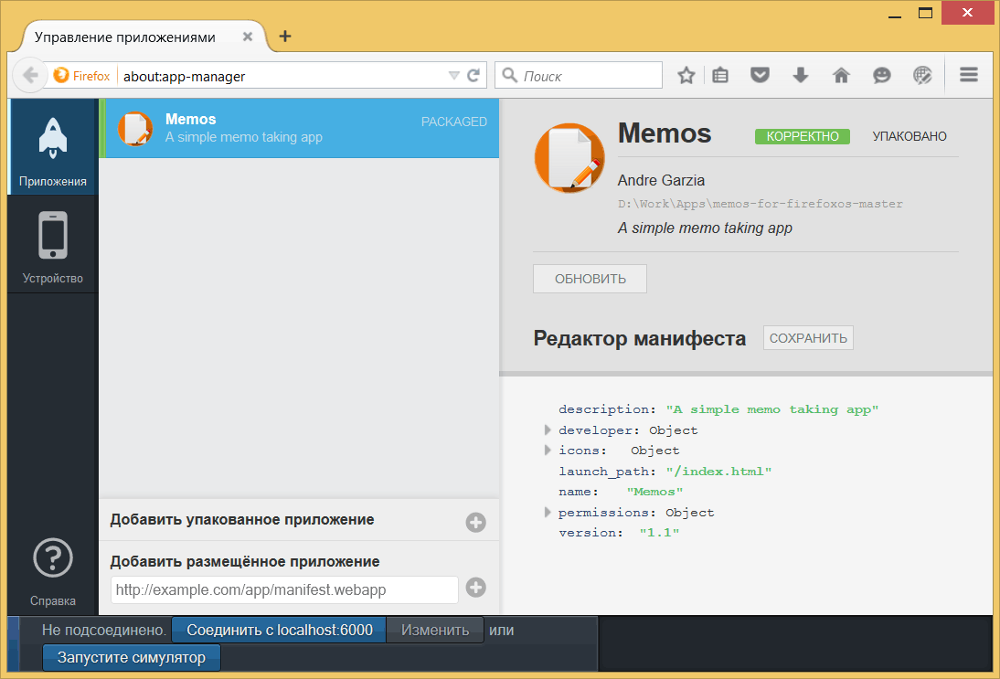

Наше первое приложение

Memos, минималистское приложение для заметок
В этой главе мы собираемся создать простое приложение Memos, предназначенное для заметок. Перед написанием кода давайте рассмотрим, как оно работает.
Приложение имеет три экрана. Первый экран основной и содержит список сохранённых заметок по названию. Когда вы щёлкаете по заметке (или добавляете новую), то перемещаетесь к другому экрану, на котором можно редактировать содержимое и заголовок выбранной заметки. Это показано на рисунке ниже.
Memos, экран редактирования
На экране показанном выше пользователь может удалить выбранную заметку, щёлкнув на иконку корзины. Это вызовет диалоговое окно для подтверждения.

Memos, экран подтверждения удаления
Исходный код для Memos доступен на Github (также в виде файла .zip). Я рекомендую вам скачать файлы, чтобы было проще идти дальше. Другая копия исходного кода доступна в папке code внутри хранилища GitHub для этой книги.
Memos использует IndexedDB для хранения заметок и Gaia Building Blocks для построения интерфейса. В будущем обновлении этой книге я скажу больше о Gaia Building Blocks, но на данный момент просто использую это. Вы можете посмотреть ссылку выше, чтобы узнать больше о Gaia и о том, какие инструменты интерфейса предоставляются.
Первый шаг заключается в создании папки приложения, назовём эту папку memos.
Создание манифеста приложения
Создайте файл с именем manifest.webapp в папке memos. Манифест — это файл в формате JSON, который описывает приложение. В этом файле мы пишем такие вещи, как имя приложения, кто разработчик, какие иконки использовать, какой файл применяется для запуска приложения, какие привилегированные API вы хотели бы использовать и др.
Ниже мы можем увидеть содержимое манифеста приложения Memos. Будьте внимательны при копировании данных, потому что очень легко добавить запятую не в том месте и создать некорректный JSON. Существует множество инструментов, которые можно использовать для проверки файлов JSON, но есть особый, который сделан специально для проверки манифеста приложения. Вы можете посмотреть этот онлайновый инструмент на marketplace.firefox.com. Чтобы узнать больше о манифесте приложения прочитайте эту страницу на MDN.
Файл манифеста Memos (manifest.webapp)
{
"name": "Memos",
"version": "1.1",
"description": "A simple memo taking app",
"launch_path": "/index.html",
"permissions": {
"storage": {
"description": "Required for storing and retrieving notes."
}
},
"developer": {
"name": "Andre Garzia",
"url": "http://andregarzia.com"
},
"icons": {
"60": "/style/icons/icon_60.png",
"128": "/style/icons/icon_128.png"
}
}Рассмотрим поля из манифеста выше.
| Поле | Описание |
|---|---|
| name | Имя приложения. |
| version | Текущая версия приложения. |
| launch_path | Какой файл использовать для запуска вашего приложения. |
| permissions | Какие права доступа требуются вашему приложению. Подробнее об этом ниже. |
| developer | Кто разработал это приложение. |
| icons | Иконки разных размеров используемые приложением. |
Самая интересная часть манифеста это поле permissions, где мы просим разрешения на хранение данных, что позволяет нам использовать IndexedDB без ограничения размера. Благодаря этому разрешению мы можем хранить столько заметок, сколько захотим. Так что надо быть внимательным, чтобы не занять слишком много места на диске пользователя!
Теперь, когда манифест готов, давайте перейдём к HTML.
Создание HTML
Прежде, чем мы начнем работать с HTML, немного отойдём от темы и быстро поговорим о Gaia Building Blocks, она представляет собой коллекцию CSS и JS предназначенную специально для Firefox OS, которую можно использовать в наших приложениях.
Подобно сайтам вы не обязаны использовать внешний вид Firefox OS в вашем приложении. Применять или нет Gaia Building Blocks — это личный выбор каждого, поскольку хорошие приложения должны иметь свой собственный отличительный стиль и работу с пользователями. Важно понимать, что ваше приложение на Firefox Marketplace не будет наказано или оценено предвзято, если вы не используете внешний вид Gaia. Я использую её здесь, потому что не очень хороший дизайнер и не готов делать привлекательные интерфейсы (или нанимать дизайнера).
Структура HTML, которую мы используем в этом приложении, была построена с помощью шаблонов заимствованных из Gaia Building Blocks. Каждый экран представляет собой <section>, а элементы идут в определённом формате. Если вы ещё этого не сделали, то загрузите исходный код из хранилища memos, чтобы у вас были файлы для работы (в том числе Building Blocks). Для тех, кто не привык работать с git и GitHub, файлы также доступны в виде .zip.
Версия Gaia Building Blocks, которую я использовал для этого приложения, не самая современная с Mozilla. Попытка обновиться до текущей версии приведёт, к сожалению, к выходу из строя приложение Memos. В ваших собственных проектах, однако, всегда используйте последнюю версию Gaia Building Blocks.
Включение Building Blocks
Прежде чем сделать что-либо скопируйте папки shared и styles загруженные из хранилища Memos в ранее созданную папку memos. Это позволит использовать Gaia Building Blocks в нашем приложении.
Начнём с файла index.html, добавив в него необходимые фрагменты.
<!DOCTYPE html>
<html>
<head>
<meta charset="utf-8">
<link rel="stylesheet" type="text/css" href="style/base.css" />
<link rel="stylesheet" type="text/css" href="style/ui.css" />
<link rel="stylesheet" type="text/css" href="style/building_blocks.css" />
<link rel="stylesheet" type="text/css" href="shared/style/headers.css" />
<link rel="stylesheet" type="text/css" href="shared/style_unstable/lists.css" />
<link rel="stylesheet" type="text/css" href="shared/style_unstable/toolbars.css" />
<link rel="stylesheet" type="text/css" href="shared/style/input_areas.css" />
<link rel="stylesheet" type="text/css" href="shared/style/confirm.css" />
<title>Memos</title>
</head>В первой строке мы объявляем DOCTYPE как HTML5. В строках с 05 по 12 мы включаем CSS от разных компонент, которые собираемся использовать в нашем приложении, таких как заголовки, списки, поля ввода текста и др.
Построение основного экрана
Теперь мы можем начать строить различные экраны. Как упоминалось ранее, каждый экран нашего приложения задействует <section> внутри <body>. Тег body должен содержать атрибут role со значением application, поскольку используется селекторами CSS для построения интерфейса, так что у нас получится <body role="application">. Давайте построим первый экран и заодно объявим наш тег body.
<body role="application">
<section role="region" id="memo-list">
<header>
<menu type="toolbar">
<a id="new-memo" href="#"><span class="icon icon-add">add</span></a>
</menu>
<h1>Memos</h1>
</header>
<article id="memoList" data-type="list"></article>
</section>Наш экран содержит <header> с кнопкой для добавления новой заметки и именем приложения. Экран также имеет <article>, который будет использоваться для хранения списка сохранённых заметок. Мы собираемся использовать кнопку и идентификатор <article> в работе событий, когда перейдём к добавлению JavaScript.
Помните, что каждый экран это довольно простой фрагмент HTML. Построение тех же экранов на нескольких языках, как правило, требует гораздо больше работы. Всё, что мы делаем — это объявляем наши контейнеры и даём им идентификаторы, на которые должны ссылаться позже.
Теперь основной экран готов и переходим к экрану редактирования.
Построение экрана редактирования
Экран редактирования немного сложнее, поскольку содержит диалоговое окно, появляющееся, когда пользователь пытается удалить заметку.
<section role="region" id="memo-detail" class="skin-dark hidden">
<header>
<button id="back-to-list"><span class="icon icon-back">back</span>
</button>
<menu type="toolbar">
<a id="share-memo" href="#"><span class="icon icon-share">share</span></a>
</menu>
<form action="#">
<input id="memo-title" placeholder="Memo Title" required="required" type="text">
<button type="reset">Remove text</button>
</form>
</header>
<p id="memo-area">
<textarea placeholder="Memo content" id="memo-content"></textarea>
</p>
<div role="toolbar">
<ul>
<li>
<button id="delete-memo" class="icon-delete">Delete</button>
</li>
</ul>
</div>
<form id="delete-memo-dialog" role="dialog" data-type="confirm" class="hidden">
<section>
<h1>Confirmation</h1>
<p>Are you sure you want to delete this memo?</p>
</section>
<menu>
<button id="cancel-delete-action">Cancel</button>
<button id="confirm-delete-action" class="danger">Delete</button>
</menu>
</form>
</section>В верхней части экрана, в виде элемента <header>, у нас есть:
- кнопка back для возврата на основной экран;
- поле ввода текста, которое применяется для хранения заголовка выбранной заметки;
- и кнопка, которая используется, чтобы поделиться заметкой по электронной почте.
Ниже верхней панели у нас есть абзац с <textarea>, который содержит содержание заметки, а затем идёт ещё одна панель с кнопкой корзины для удаления текущей заметки.
Эти три элемента, включая дочерние, и представляют собой экран редактирования. После них идёт элемент <form>, который применяется для диалогового окна, содержащего экран подтверждения, когда пользователь пытается удалить заметку. Это диалоговое окно довольно простое, содержит только текст подтверждения и две кнопки: одна для удаления заметки, а вторая для отмены действия.
Теперь мы закрываем <section>, поскольку все наши экраны реализованы, остальной код нужен для включения файлов JavaScript и закрытия HTML.
<script src="/js/model.js"></script>
<script src="/js/app.js"></script>
</body>
</html>Работа с кодом JavaScript
Теперь мы собираемся вдохнуть жизнь в наше приложение, добавив JavaScript. Чтобы лучше организовать этот код, я разделил JavaScript на два файла.
model.js: содержит процедуры по работе с хранением и получением заметок, но не содержит логику приложения или что-либо связанное с интерфейсом и вводом данных. В теории, мы могли бы использовать этот же файл в других приложениях, требующих текстовых заметок.
app.js: связывает элементы HTML с обработчиками событий и содержит логику приложения.
Оба файла должны находиться внутри папки js там же, где папки style и shared.
model.js
Мы собираемся использовать IndexedDB для хранения наших заметок. Поскольку мы запросили разрешение на хранение в манифесте приложения, то можем хранить столько заметок, сколько пожелаем, однако не должны злоупотреблять этим! Устройства на Firefox, как правило, имеют довольно ограниченное место для хранения, так что всегда помните о данных, которые вы сохраняете. Пользователи удалят ваше приложение и понизят его рейтинг, если оно использует слишком много места для хранения! К тому же это приводит к снижению производительности и сделает ваше приложение медлительным. Также обратите внимание, что когда вы подаёте заявку в Firefox Marketplace рецензенты спросят вас, зачем вам требуется неограниченное пространство для хранения. Если вы не сможете это обосновать, то приложение будет отклонено.
Часть кода из model.js приведённая ниже отвечает за открытие соединения и создание хранилища.
Этот код был написан, чтобы быть понятным и представляет не лучшие практики для программирования на JavaScript. Используются глобальные переменные (я готов отправиться в ад за такое) среди других лакомых кусочков. Код обработки ошибок в основном не реален. Основная цель этой книги — обучить рабочему процессу разработки приложений для Firefox OS, а не показать лучшие техники JS. В зависимости от обратной связи я обновлю код в этой книге, чтобы лучше отразить хорошую практику, если достаточное количество людей думает, что это не повлияет на новичков.
var dbName = "memos";
var dbVersion = 1;
var db;
var request = indexedDB.open(dbName, dbVersion);
request.onerror = function (event) {
console.error("Can't open indexedDB!!!", event);
};
request.onsuccess = function (event) {
console.log("Database opened ok");
db = event.target.result;
};
request.onupgradeneeded = function (event) {
console.log("Running onUpgradeNeeded");
db = event.target.result;
if (!db.objectStoreNames.contains("memos")) {
console.log("Creating objectStore for memos");
var objectStore = db.createObjectStore("memos", {
keyPath: "id",
autoIncrement: true
});
objectStore.createIndex("title", "title", {
unique: false
});
console.log("Adding sample memo");
var sampleMemo1 = new Memo();
sampleMemo1.title = "Welcome Memo";
sampleMemo1.content = "This is a note taking app. Use the plus sign " +
"in the topleft corner of the main screen to " +
"add a new memo. Click a memo to edit it. All " +
"your changes are automatically saved.";
objectStore.add(sampleMemo1);
}
}Простите меня снова за глобальные переменные, это лишь образовательный ресурс. Еще одна деталь: я удалил комментарии из исходного кода, чтобы сэкономить место в книге. Если вы возьмёте исходники с GitHub, то получите все комментарии.
Код выше создаёт объект db и request. Объект db используется другими функциями для манипуляции хранилищем заметок.
При выполнении функции request.onupgradeneeded мы также создаём заметку с приветствием. Эта функция выполняется, когда приложение запускается в первый раз (или когда изменяется версия базы данных). Таким образом, как только приложение запускается впервые, то в базе данных появляется единственная заметка с приветствием.
Теперь, когда соединение открыто и хранилище инициализировано, пришло время реализации основных функций для манипуляции с заметками.
function Memo() {
this.title = "Untitled Memo";
this.content = "";
this.created = Date.now();
this.modified = Date.now();
}
function listAllMemoTitles(inCallback) {
var objectStore = db.transaction("memos").objectStore("memos");
console.log("Listing memos...");
objectStore.openCursor().onsuccess = function (event) {
var cursor = event.target.result;
if (cursor) {
console.log("Found memo #" + cursor.value.id +
" - " + cursor.value.title);
inCallback(null, cursor.value);
cursor.continue();
}
};
}
function saveMemo(inMemo, inCallback) {
var transaction = db.transaction(["memos"], "readwrite");
console.log("Saving memo");
transaction.oncomplete = function (event) {
console.log("All done");
};
transaction.onerror = function (event) {
console.error("Error saving memo:", event);
inCallback({
error: event
}, null);
};
var objectStore = transaction.objectStore("memos");
inMemo.modified = Date.now();
var request = objectStore.put(inMemo);
request.onsuccess = function (event) {
console.log("Memo saved with id: " + request.result);
inCallback(null, request.result);
};
}
function deleteMemo(inId, inCallback) {
console.log("Deleting memo...");
var request = db.transaction(["memos"],
"readwrite").objectStore("memos").delete(inId);
request.onsuccess = function (event) {
console.log("Memo deleted!");
inCallback();
};
}В куске кода выше мы добавляем функцию конструктора, которая создаёт новые заметки, с некоторыми уже заполненными полями. После этого мы реализуем функции для вывода списка, сохранения и удаления заметок. Многие из этих функций содержат параметр с именем inCallback, который функция будет вызывать после того, как сделает своё дело. Это необходимо из-за асинхронной природы IndexedDB. Все функции обратного вызова имеют одинаковую структуру— callback(error, value), где одно из значений равно нулю в зависимости от результатов предыдущей функции.
Так как эта книга для новичков, то я решил не использовать Promises, поскольку многие начинающие с этим не знакомы. Я рекомендую использовать подобные концепции для создания более наглядного кода, который к тому же более приятен для чтения.
Теперь, когда хранилище заметок и функции для их управления готовы, реализуем логику нашего приложения в файле app.js.
app.js
Этот файл будет содержать логику нашего приложения. Поскольку исходный код слишком большой, чтобы разместить всё сразу в книге, я разобью его на части и объясню каждую часть одну за другой.
var listView, detailView, currentMemo, deleteMemoDialog;
function showMemoDetail(inMemo) {
currentMemo = inMemo;
displayMemo();
listView.classList.add("hidden");
detailView.classList.remove("hidden");
}
function displayMemo() {
document.getElementById("memo-title").value = currentMemo.title;
document.getElementById("memo-content").value = currentMemo.content;
}
function shareMemo() {
var shareActivity = new MozActivity({
name: "new",
data: {
type: "mail",
body: currentMemo.content,
url: "mailto:?body=" + encodeURIComponent(currentMemo.content) +
"&subject=" + encodeURIComponent(currentMemo.title)
}
});
shareActivity.onerror = function (e) {
console.log("can't share memo", e);
};
}
function textChanged(e) {
currentMemo.title = document.getElementById("memo-title").value;
currentMemo.content = document.getElementById("memo-content").value;
saveMemo(currentMemo, function (err, succ) {
console.log("save memo callback ", err, succ);
if (!err) {
currentMemo.id = succ;
}
});
}
function newMemo() {
var theMemo = new Memo();
showMemoDetail(theMemo);
}Вначале мы объявляем некоторые глобальные переменные (фу!!!), чтобы ссылаться на элементы DOM, которые мы хотим использовать позже внутри некоторых функций. Самое интересное — это глобальная переменная currentMemo — объект, в котором хранится текущая заметка, которую читает пользователь.
Фукнкции showMemoDetail() и displayMemo() работают совместно. Первая загружает выбранную заметку в currentMemo и манипулирует стилем элементов таким образом, чтобы показать экран редактирования. Вторая берёт содержимое из переменной currentMemo и помещает на экран. Мы могли бы сделать их одной функцией, но разделение упрощает эксперименты с новыми реализациями.
Функция shareMemo() использует WebActivity, чтобы открыть приложение электронной почты с новым сообщением, предварительно заполненным содержанием выбранной заметки.
Функция TextChanged() берёт данные из полей ввода и помещает их в объект currentMemo, после чего сохраняет заметку. Это делается потому, что приложение автоматически сохраняет ваше содержимое. Любое изменение содержимого или заголовка заметки вызовет эту функцию и заметка всегда будет сохранена в хранилище IndexedDB.
Функция newMemo() создаёт новую заметку и открывает экран её редактирования.
function requestDeleteConfirmation() {
deleteMemoDialog.classList.remove("hidden");
}
function closeDeleteMemoDialog() {
deleteMemoDialog.classList.add("hidden");
}
function deleteCurrentMemo() {
closeDeleteMemoDialog();
deleteMemo(currentMemo.id, function (err, succ) {
console.log("callback from delete", err, succ);
if (!err) {
showMemoList();
}
});
}
function showMemoList() {
currentMemo = null;
refreshMemoList();
listView.classList.remove("hidden");
detailView.classList.add("hidden");
}Функция requestDeleteConfirmation() отвечает за показ диалога подтверждения удаления заметки.
closeDeleteMemoDialog() и deleteCurrentMemo() срабатывают с помощью кнопок в диалоговом окне подтверждения удаления.
Функция showMemoList() делает некоторые чистки, прежде чем показывать список сохранённых заметок. Например, она очищает содержимое currentMemo, поскольку мы ещё не читали никаких заметок.
function refreshMemoList() {
if (!db) {
// ХАК:
// это условие может произойти первый раз,
// когда хранилище indexDB создано и вызвана
// функция refreshMemoList(). Просто подождите
// немного дольше, перед тем как попробовать снова
// выполнить ту же работу.
console.warn("Database is not ready yet");
setTimeout(refreshMemoList, 1000);
return;
}
console.log("Refreshing memo list");
var memoListContainer = document.getElementById("memoList");
while (memoListContainer.hasChildNodes()) {
memoListContainer.removeChild(memoListContainer.lastChild);
}
var memoList = document.createElement("ul");
memoListContainer.appendChild(memoList);
listAllMemoTitles(function (err, value) {
var memoItem = document.createElement("li");
var memoP = document.createElement("p");
var memoTitle = document.createTextNode(value.title);
memoItem.addEventListener("click", function (e) {
console.log("clicked memo #" + value.id);
showMemoDetail(value);
});
memoP.appendChild(memoTitle);
memoItem.appendChild(memoP);
memoList.appendChild(memoItem);
});
}Функция refreshMemoList() модифицирует DOM, строя элемент за элементом список заметок, которые отображаются на экране. Было бы намного легче использовать помощь некоторых шаблонизаторов, таких как handlebars или underscore, но так как это приложение построено только на ванильном JavaScript, то мы всё делаем вручную. Эта функция вызывает showMemoList(), которая была показана выше.
Вот и все функции применяемые в нашем приложении. Отсутствует только часть кода, которая инициализирует обработчики событий и начальный вызов refreshMemoList().
window.onload = function () {
// Элементы, которые мы собираемся использовать в коде
listView = document.getElementById("memo-list");
detailView = document.getElementById("memo-detail");
deleteMemoDialog = document.getElementById("delete-memo-dialog");
// Все слушатели для кнопок интерфейса и для изменения ввода
document.getElementById("back-to-list").addEventListener("click", showMemoList);
document.getElementById("new-memo").addEventListener("click", newMemo);
document.getElementById("share-memo").addEventListener("click", shareMemo);
document.getElementById("delete-memo").addEventListener("click", requestDeleteConfirmation);
document.getElementById("confirm-delete-action").addEventListener("click", deleteCurrentMemo);
document.getElementById("cancel-delete-action").addEventListener("click", closeDeleteMemoDialog);
document.getElementById("memo-content").addEventListener("input", textChanged);
document.getElementById("memo-title").addEventListener("input", textChanged);
// Точкой входа для приложения является следующая команда
refreshMemoList();
};Теперь все файлы готовы и мы можем начать тестировать наше приложение на симуляторе. Есть два способа сделать это в зависимости от того, используете ли вы Менеджер приложений или старый симулятор Firefox OS 1.1. В следующем разделе мы покажем оба способа. Позже пойдут конкретные главы, посвященные каждой технологии.
Если вы работаете с Firefox 29 или новее, то у вас уже есть Менеджер приложений, для ранних версий вы можете использовать старый симулятор. Помните, что Менеджер приложений возможно подключить только к устройствам с Firefox OS 1.2 и выше.
Если у вас есть устройство на Firefox OS 1.1 и вы работаете с Firefox 29, то установите симулятор Firefox OS 1.1 версии 5.0 для Mac OS X, Linux или Windows. Если вы установите этот симулятор, то сможете следовать инструкциям для старого симулятора Firefox OS 1.1 и возможностью подключения устройства.
Если ваше устройство на Firefox OS 1.1 разблокировано и может получить версию 1.2 или старше, то вам необходимо обновиться, потому что это сделает жизнь намного проще. Ежедневные билды Firefox OS для Geeksphone Keon, Geeksphone Peak и Geeksphone Revolution доступны на http://downloads.geeksphone.com. ZTE Open также можно обновить, следуя этим инструкциям. LG Fireweb не может быть обновлён; если вам как и мне это не нравится, то напишите об ошибке LG. Alcatel One Touch Fire может быть разблокирован, но инструкция об этом выходит за рамки этой книги.
Замечание. Баг № 1001590 на Bugzilla исправит текущую проблему, при которой невозможно запустить симулятор Firefox OS 1.1 на Firefox 29.
Тестирование приложения в Менеджере приложений
Прежде чем мы испытаем наше приложение, надо проверить что все файлы находятся на своих местах. Папка memos должна выглядеть так.

Список файлов Memos
Если есть подозрение, что вы написали что-то неправильно, просто сравните вашу версию с версией из хранилища memos на GitHub. Есть также копия исходного кода в папке code в хранилище книги.
Чтобы открыть панель симулятора перейдите в меню .
Примечание редактора. В новых версиях Firefox нельзя вызвать Менеджер приложений через меню, потому что от него отказались в пользу WebIDE. Для открытия Менеджера наберите в адресной строке about:app-manager.
Открыв Менеджер приложений, нажмите Добавить упакованное приложение на вкладке Приложения и выберите папку, в которой у вас хранятся файлы memos.

Добавление нового приложениям
Если все работает как ожидалось, то вы увидите приложение Memos в списке приложений.

Memos показывается в Менеджере приложений
После добавления приложения нажмите кнопку Запустите симулятор и выберите один из установленных симуляторов. Если симулятор у вас ещё не установлен, я советую вам следовать инструкциям на экране и установить их все.
С работающим симулятором нажмите кнопку Обновить в списке Менеджера приложений для установки Memos и запуска симулятора. После установки иконка приложения появится на домашнем экране симулятора. Вы можете просто щёлкнуть по ней для запуска приложения.
Memos установлено в симуляторе
Поздравляем! Вы создали и протестировали своё первое приложение. Это не сложное или революционное приложение — но я надеюсь, оно помогло вам понять рабочий процесс разработки под Firefox OS. Как вы можете видеть, он не сильно отличается от стандартной веб-разработки.
Помните, что всякий раз, когда вы вносите изменения в исходные файлы вам нужно нажать на кнопку Обновить для обновления копии приложения, хранящейся в запущенном симуляторе.
Тестирование приложения в симуляторе
Прежде чем испытать наше приложение в симуляторе, нам лучше проверить, что все файлы находятся на своих местах. Папка memos должна выглядеть так.
Список файлов Memos
Если есть подозрение, что вы написали что-то неправильно, просто сравните вашу версию с версией из хранилища memos на GitHub. Есть также копия исходного кода в папке code в хранилище книги.
Чтобы открыть панель симулятора перейдите в меню .
Как открыть панель симулятора
В открытой панели нажмите кнопку Add Directory, сделайте обзор файлов и выберите манифест приложения в папке memos.
Добавление нового приложения
Если всё работает как и ожидалось, то вы увидите приложение Memos в списке приложений.

Memos показано на панели
При добавлении нового приложения, симулятор запускается и выполняет ваше приложение, что позволяет его проверить. Теперь вы можете опробовать все возможности Memos.
Поздравляем! Вы создали и протестировали своё первое приложение. Это не сложное или революционное приложение — но я надеюсь, оно помогло вам понять рабочий процесс разработки под Firefox OS. Как вы можете видеть, он не сильно отличается от стандартной веб-разработки.
Помните, что всякий раз, когда вы вносите изменения в исходные файлы вам нужно нажать на кнопку Обновить для обновления копии приложения, хранящейся в запущенном симуляторе.
Резюме
В этой главе мы построили наше первое приложение на Firefox OS и увидели как оно работает в симуляторе. В следующей главе мы собираемся сделать обзор инструментов разработчика, которые поставляется в комплекте с Firefox, они сделают вашу жизнь намного проще при разработке приложений.

Все материалы сайта доступны по лицензии Creative Commons «Attribution-NonCommercial» («Атрибуция — Некоммерческое использование») 4.0 Всемирная, если не указано иное.